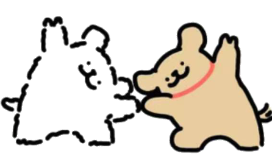

歡迎回來，加油衝刺 DSE！
距離考試還有不到一年，每一道練習題都是你前進的一步。善用本寶典的真題練習和知識點講解，穩步提升！
各科目概覽
快速開始

上傳教材 · 智能分析
上傳你的教材電子版（PDF / DOCX / TXT），系統會自動分析內容，根據 DSE 考核重點為你生成預測題目。
💡 使用提示
試卷分析 · 智能出答案
上傳你的模擬試卷、歷屆真題或練習卷，系統會自動分析題目結構，為你生成詳盡的參考答案和評分要點。
📋 歷史分析記錄
強化記憶 · 間隔重複
運用閃卡記憶法，科學間隔重複，讓知識牢固刻入腦海。選擇科目開始記憶訓練。
選擇科目開始記憶
中國語文 · DSE 備考
重點攻克文言文閱讀、白話文理解及寫作。以下題目均參考 DSE 真題風格設計。
——宋濂《送東陽馬生序》
「嗜」的意思：「嗜」在此處解作「酷愛」或「特別愛好」，表達作者自幼便對學習有強烈的熱愛，並非一般的喜歡。
具體事例：
① 借書抄錄——家貧無錢買書，只能向藏書人家借書，親手抄寫，按時歸還；
② 寒冬苦讀——天氣嚴寒，硯台結冰，手指凍僵不能屈伸，仍不鬆懈抄錄；
③ 守約還書——抄完後趕緊送還，不敢超過約定期限，因此獲得他人信任，得以借閱更多書籍。
——《戰國策 · 鄒忌諷齊王納諫》
措辭差異：
妻曰「君美甚，徐公何能及君也」——先讚美丈夫「美甚」（非常美），再反問徐公怎能比得上，語氣帶有強烈的偏愛與讚嘆。
妾曰「徐公何能及君也」——僅用反問句，省去了「君美甚」的直接讚美，語氣較為簡短、被動。
反映的深層含義：妻的回答反映夫妻之間的偏愛（「私」），妾的回答反映妾對丈夫的畏懼（「畏」）。兩者都沒有說實話，這為鄒忌後來類比勸諫齊王——「王之蔽甚矣」（大王受蒙蔽太深了）——埋下了伏筆。
——史鐵生《我與地壇》（節選）
原因分析：
作者認為有些經歷和情感太過深刻和複雜，語言無法完全表達。一旦用語言描述，這些體驗就會被簡化、變質，失去原本的真實性和豐富性。「它們不能變成語言，它們無法變成語言一旦變成語言就不再是它們了」，這句話強調了語言的局限性。
情感表達：
「朦朧的溫馨與寂寥」「成熟的希望與絕望」——這些矛盾的並列表達了作者對生命經歷的複雜感受：既有溫暖也有孤獨，既有希望也有絕望。「罪孽和福祉」的並列也暗示了命運帶給他的苦難（殘疾）和因此獲得的感悟。整體表達了一種深沉而內斂的生命感悟，是對苦難的接納和對生命的敬畏。
「先天下之憂而憂，後天下之樂而樂。」——范仲淹《岳陽樓記》
（3分）
在天下人憂愁之前先憂愁，在天下人快樂之後才快樂。
——朱自清《背影》
① 「攀」——用手抓住上方，表現月台之高和父親攀爬的吃力，突出父親年邁仍努力為兒子買橘子。
② 「縮」——兩腳向上縮，表現父親身體肥胖、行動不便，攀爬時的艱難。
③ 「傾」——身體向左微傾，表現父親努力維持平衡的姿態，暗示動作的吃力和笨拙。
這些細膩的動作描寫，將一個年邁肥胖的父親為兒子買橘子時的艱難過程完整呈現，以「背影」為載體，表達了深沉無言的父愛，令讀者和作者一同感動落淚。
① 「不以物喜，不以己悲」中的「以」
② 「錄畢，走送之」中的「走」
③ 「率妻子邑人來此絕境」中的「妻子」
（每詞1分，共3分）
① 以 = 因為（不因為外物而高興）
② 走 = 跑（不是現代的「步行」，古義是「跑」）
③ 妻子 = 妻子和兒女（不是現代的「太太」，古義是「妻」+「子」）
文言文基礎知識（重點加強）
13 個知識點文言文中，一個字往往有多個意思，需要根據上下文來判斷。這是 DSE 文言文部分最常見的考點。
DSE 高頻考字整理：
① 「以」：（a）用——「以衾擁覆」（用被子蓋）；（b）因為——「不以物喜」（不因為外物而高興）；（c）來/以便——「無從致書以觀」（沒有辦法得到書來看）；（d）認為——「皆以美於徐公」（都認為比徐公美）。
② 「之」：（a）的——「城北徐公」的「齊國之美麗者也」（齊國美麗的人）；（b）代詞——「弗之怠」（不對它鬆懈）；（c）去/到——「送孟浩然之廣陵」（送孟浩然去廣陵）；（d）取消句子獨立性——「師道之不傳也久矣」。
③ 「而」：（a）而且/並且——表並列或遞進；（b）但是/卻——表轉折；（c）然後——表承接。
文言文中，某些詞可以「臨時」改變它的詞性。例如名詞用作動詞、形容詞用作動詞等。
常見類型：
① 名詞作動詞：「朝服衣冠」——「服」本是名詞（衣服），這裡用作動詞，意思是「穿戴」。
② 形容詞作動詞：「京中有善口技者」——「善」本是形容詞（好的），這裡用作動詞，意思是「擅長」。
③ 名詞作狀語：「箕畚運於渤海之尾」——「箕畚」本是名詞（簸箕），這裡用作狀語，意思是「用簸箕」。
④ 使動用法：「無案牘之勞形」——「勞」是「使……勞累」的意思。
⑤ 意動用法：「漁人甚異之」——「異」是「以……為異（感到奇怪）」的意思。
「邑人奇之」→「奇」是形容詞意動用法，意思是「以……為奇（覺得他很特別）」。
「父利其然也」→「利」是名詞意動用法，意思是「以……為利（認為這樣有利可圖）」。
文言文的句式與現代漢語有較大差異，掌握基本句式是翻譯和理解的關鍵。
四大句式：
① 判斷句：「……者，……也」——「陳勝者，陽城人也」= 陳勝是陽城人。注意：文言文判斷句通常不用「是」字。
② 被動句：「為……所」——「為秦人積威之所劫」= 被秦國人積累的威勢所脅迫。
③ 賓語前置：「何陋之有？」= 有什麼簡陋的呢？（正常語序：有何陋）
④ 狀語後置：「戰於長勺」= 在長勺作戰。（正常語序：於長勺戰）
很多字在古代和現代的意思截然不同，這是 DSE 文言文的常見陷阱。
DSE 高頻古今異義：
• 走：古=跑 → 今=步行（「走送之」= 跑去送還）
• 去：古=離開 → 今=前往（「去國懷鄉」= 離開國都思念故鄉）
• 妻子：古=妻子和兒女 → 今=配偶（「率妻子邑人來此絕境」）
• 交通：古=交相通達 → 今=運輸（「阡陌交通，雞犬相聞」）
• 無論：古=不要說 → 今=不管（「無論魏晉」）
• 可以：古=可以憑/可以用 → 今=能夠（「忠之屬也，可以一戰」= 可以憑此一戰）
虛詞是文言文的「骨架」，本身沒有實在意義，但決定了句子的結構和語氣。
核心虛詞速查：
• 之：的 / 代詞(它、他) / 去到 / 取消句子獨立性 / 音節助詞(無義)
• 其：他的(代詞) / 那個(指示) / 大概(語氣) / 難道(反問)
• 以：用 / 因為 / 來(目的) / 認為 / 在(時間)
• 於：在 / 對於 / 比 / 從 / 給
• 而：而且(並列) / 但是(轉折) / 然後(承接) / 如果(假設)
12篇指定篇章要點
DSE 必考範圍核心思想：
① 仁：「克己復禮為仁」= 約束自己、回歸禮儀就是仁。「己所不欲，勿施於人」= 自己不想要的，不要強加於人。
② 孝：「父母在，不遠遊，遊必有方」= 父母在世時不出遠門，如果要去要有明確方向。
③ 君子：「君子喻於義，小人喻於利」= 君子看重道義，小人看重利益。
中心論點：「生，亦我所欲也；義，亦我所欲也。二者不可得兼，舍生而取義者也。」
論證結構：
① 比喻論證：魚和熊掌不可兼得 → 生和義不可兼得 → 舍生取義
② 對比論證：「不食嗟來之食」（有骨氣）vs 「為宮室之美而為之」（為利益放棄原則）
③ 舉例論證：歷史上捨生取義的人物
「萬鍾則不辯禮義而受之，萬鍾於我何加焉」
→ 豐厚的俸祿如果不分辨是否合乎禮義就接受，那豐厚的俸祿對我有什麼好處呢？
寫作背景：蜀漢建興五年（227年），諸葛亮準備北伐曹魏，出發前上書後主劉禪。
三大建議：
① 廣開言路：「開張聖聽」= 廣泛聽取意見
② 嚴明賞罰：「陟罰臧否，不宜異同」= 獎懲標準應一致
③ 親賢遠佞：推薦郭攸之、費禕、董允等賢臣
名句：「鞠躬盡瘁，死而後已」= 竭盡全力，到死為止。
核心名句：「先天下之憂而憂，後天下之樂而樂」
寫作手法：
① 借景抒情：描寫洞庭湖的不同景色（陰/晴），引出不同的心情
② 對比：「淫雨霏霏」的悲景 vs 「春和景明」的樂景 → 遷客騷人的不同反應
③ 先敘後議：先寫景記事，最後發表議論，點明主旨
• 分析「以物喜，以己悲」和「不以物喜，不以己悲」的對比效果
• 解釋范仲淹如何通過寫景來表達政治抱負
• 討論「先憂後樂」思想在現代社會的意義
中心論點：「古之學者必有師」= 古代求學的人一定有老師。
師的職能：「師者，所以傳道受業解惑也」= 老師是用來傳授道理、教授學業、解答疑惑的。
核心觀點：
① 從師不論貴賤：「無貴無賤，無長無少，道之所存，師之所存也」
② 弟子不必不如師：「聞道有先後，術業有專攻」
③ 批判恥學於師：「師道之不傳也久矣」= 從師學習的風氣失傳很久了
中心論點：「六國破滅，非兵不利，戰不善，弊在賂秦」
論證結構：
① 賂秦而力虧：割地求和 → 國力削弱 → 最終滅亡
② 不賂者以賂者喪：不賄賂的國家因為失去盟友而滅亡
③ 借古諷今：批評北宋向遼、西夏納貢的政策
背景：李密被晉武帝徵召做官，但祖母年老多病需要照顧，上表推辭。
名句：
「臣無祖母，無以至今日；祖母無臣，無以終餘年」= 我沒有祖母就活不到今天；祖母沒有我就無法安度晚年。
「烏鳥私情，願乞終養」= 烏鴉尚有反哺之情，我請求為祖母養老送終。
寫作特點：以情動人，用「孝」打動君主。先講自己的悲慘身世，再講祖母的恩情，最後表達忠孝兩難的困境。
核心思想：真正的自由是超越一切外在條件的限制，達到「無所待」的境界。
關鍵意象：
① 鯤鵬：巨大的魚變成巨大的鳥，飛往南冥 → 即使再偉大，也需要依靠風（「風之積也不厚，則其負大翼也無力」）
② 蜩與學鳩：小鳥嘲笑大鵬 → 小知不及大知，小年不及大年
③ 至人、神人、聖人：「至人無己，神人無功，聖人無名」= 真正自由的人忘掉自我、不求功業、不求名聲
寫作訓練
2 題生活中總有一些事物，看似微不足道，卻對我們有特別的意義。試以「那道光」為題，寫作一篇文章。
提示：你可以從實際的光線（如某個場景中的光）或比喻義（如某人帶給你的啟發和溫暖）入手，記敘或抒情均可。不少於 600 字。
審題要點：「那道光」既可寫實（場景中的光線），也可寫虛（精神上的啟發）。最佳策略是虛實結合——從一個具體的「光」的場景切入，再引出背後的深層意義。
開頭：設置一個有「光」的場景（如清晨的陽光、夜晚的燈光、舞台的聚光燈等），製造畫面感。
中段：由「光」引出回憶或感悟，敘述一個具體的故事（人物、事件、轉變）。
結尾：回扣「光」的意象，升華主題——這道光給了你什麼力量或啟示。
加分技巧：
① 用五感描寫增強畫面感：不只是「看到光」，還要寫光的溫度、光線下物體的觸感等。
② 前後呼應：開頭和結尾都出現「那道光」，但含義不同或有升華。
③ 避免泛泛而談，用具體場景和細節代替抽象議論。
中文科 · 文言文核心字詞閃卡
12篇指定篇章English Language · DSE Prep
Focus on Reading comprehension, Writing skills, and Listening strategies. Questions modelled on DSE past paper formats.
The passage presents both sides: "proponents celebrate the flexibility and autonomy" (advantage) while "critics argue that it erodes worker protections" (concern). The statistic about 36% struggling with rent further highlights the negative side.
"The government's new housing policy was widely regarded as __________, as it failed to address the needs of low-income families while primarily benefiting property developers."
The context clues are "failed to address the needs" and "primarily benefiting property developers" — these indicate the policy was poorly directed or misguided.
Vocabulary note: Misguided = based on bad judgment or wrong ideas. Synonyms: ill-conceived, unwise, flawed.
You are the president of the Student Union at your school. Write a letter to the principal proposing the introduction of a "Mental Health Awareness Week". In your letter, you should:
• explain why mental health is an important issue for students
• propose at least THREE activities for the awareness week
• address potential concerns the principal may have
Write about 400 words.
Structure (for a formal letter):
① Opening: State your purpose clearly — "I am writing to propose..."
② Why it matters: Cite statistics or trends about student mental health. Use phrases like "Recent studies have shown..." or "It has come to our attention that..."
③ Proposed activities: Be specific — e.g., peer support workshops, guest speaker sessions, stress-relief activities (art therapy, mindfulness), awareness posters designed by students.
④ Address concerns: Anticipate objections — "I understand that academic schedules are demanding; however, activities could be held during lunch breaks..."
⑤ Closing: Polite request for consideration — "I would be grateful for the opportunity to discuss this proposal further."
• "I am writing to you regarding..." / "I would like to propose..."
• "It is worth noting that..." / "Furthermore..." / "In addition..."
• "I trust that you will consider..." / "I look forward to your favourable response."
The writer implies that environmental initiatives are more likely to fail due to a lack of long-term commitment than a lack of initial enthusiasm. The passage shows that residents were initially eager (evidenced by their enthusiasm, the organised bins, and volunteer presence), but over time, interest waned and the programme collapsed.
Some people believe that social media has done more harm than good to society. To what extent do you agree? Write an essay of about 400 words.
Introduction: Acknowledge the debate, state your position clearly.
Body 1 (Agree): Social media can spread misinformation, cause mental health issues (comparison, cyberbullying), and reduce face-to-face interaction.
Body 2 (Disagree/Counter): It connects people globally, enables small businesses, and raises awareness of social issues.
Body 3 (Your view): The harm depends on how it's used — regulation and digital literacy are key.
Conclusion: Restate position with nuance — not entirely harmful, but safeguards are needed.
"The mayor's __________ response to the flooding crisis — visiting affected areas within hours and setting up emergency shelters — was widely praised by residents."
The clue is "within hours" — this indicates a fast, timely response, which is the meaning of "prompt". The positive tone ("widely praised") also rules out negative words like "reluctant" and "superficial".
Vocabulary: Prompt = done quickly, without delay. Synonyms: swift, timely, rapid.
Key English Concepts
7 個DSE reading questions frequently ask about the writer's tone or attitude. This requires you to "read between the lines."
Common tones in DSE:
• Critical — uses words like "flawed", "fails to", "problematic"
• Supportive — uses words like "commendable", "effective", "promising"
• Objective/Balanced — presents both sides without emotional language
• Sarcastic — says one thing but means the opposite (look for exaggeration or irony)
A well-structured essay is essential for scoring high in Paper 2. Examiners look for clear organisation, logical flow, and cohesion.
Paragraph structure (PEEL):
• Point — state your main idea in one sentence
• Explain — elaborate on the idea
• Evidence — provide examples, statistics, or scenarios
• Link — connect back to the question or transition to the next point
Even strong candidates lose marks on avoidable grammatical errors. Here are the most common ones in DSE:
① Subject-verb agreement: "The group of students are..." → should be "is" (the subject is "group", singular)
② Run-on sentences: Joining two complete sentences with just a comma. Fix with a full stop, semicolon, or conjunction.
③ Tense consistency: Switching between past and present tense within the same paragraph without reason.
④ Article misuse: Missing or incorrect use of "a/an/the". Remember: uncountable nouns don't take "a" (e.g., "a information" ❌).
Paper 3 (Listening) is often underestimated. Here are strategies that work:
① Read ahead: Use the given reading time to scan questions and underline key words. This tells your brain what to listen for.
② Listen for signpost words: "However", "On the other hand", "More importantly" — these signal that the speaker is about to make a key point or shift direction.
③ Don't fixate on one answer: If you miss something, let it go and focus on the next question. Dwelling on a missed answer causes you to miss the next one too.
Inference questions ask "What does the writer imply/suggest?" — the answer is NOT directly stated in the text.
How to answer inference questions:
① Find the relevant paragraph
② Look for tone clues (word choice that reveals attitude)
③ Look for contrast clues ("although", "however", "despite")
④ Eliminate options that are too extreme (containing "always", "never", "completely")
Report:
• Heading: "Report on [Topic]"
• Sections with subheadings: Introduction → Findings → Recommendations
• Formal, impersonal tone: "It was found that…" / "It is recommended that…"
Proposal:
• Heading: "Proposal for [Project]"
• Structure: Introduction → Proposed Plan → Benefits → Budget/Timeline → Conclusion
• Persuasive but professional: "This initiative would greatly benefit…"
Formal Letter:
• Sender's address (top right) → Date → Recipient's address (left)
• "Dear Sir/Madam," → Subject line → Body → "Yours faithfully,"
Using collocations (words that naturally go together) makes your English sound more fluent and natural.
Academic collocations:
• raise awareness (NOT "rise awareness")
• pose a threat / problem (NOT "make a threat")
• draw a conclusion (NOT "do a conclusion")
• take measures / action (NOT "do measures")
• play a crucial/vital role (NOT "do a role")
Linking phrases for essays:
• It is worth noting that… / It goes without saying that…
• From my perspective… / In light of the evidence…
• This serves to highlight… / This begs the question of…